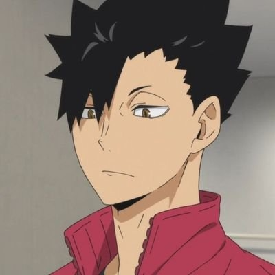
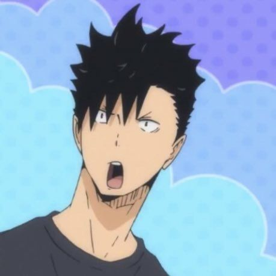
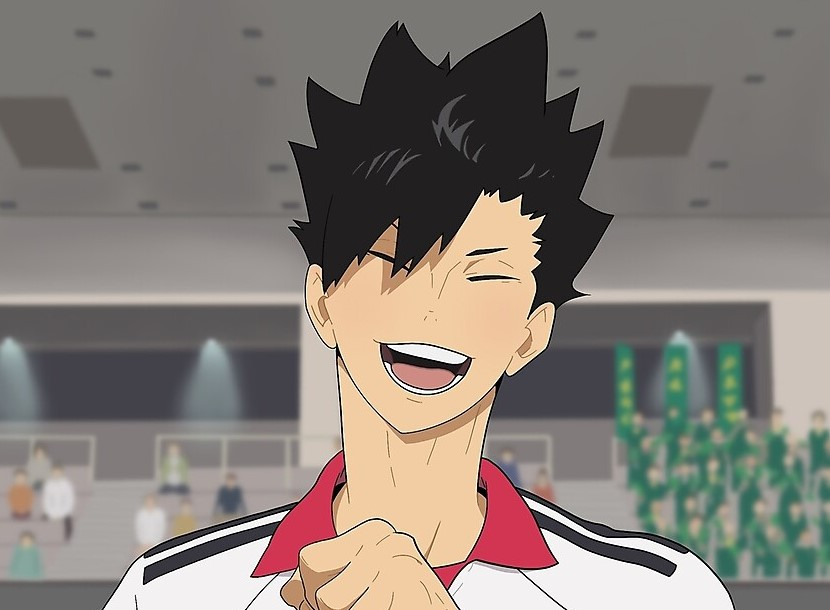
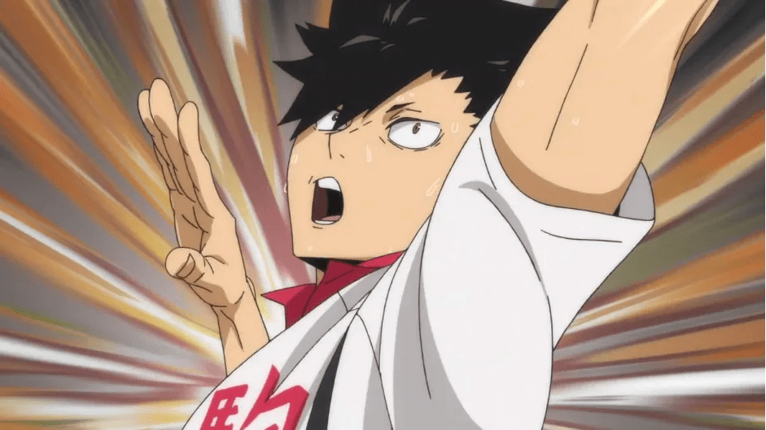
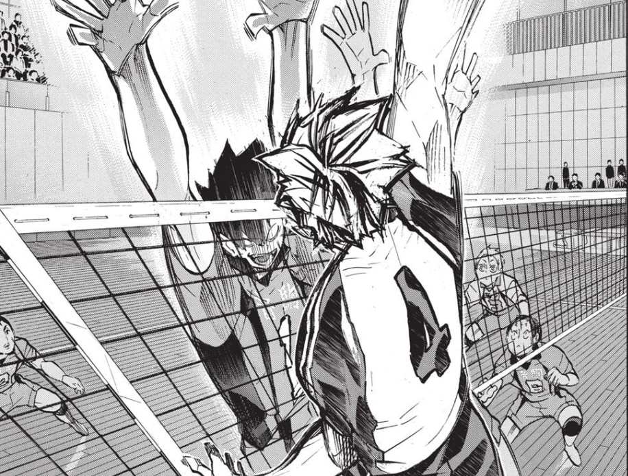
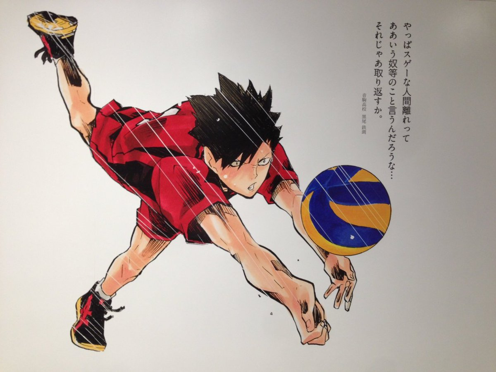
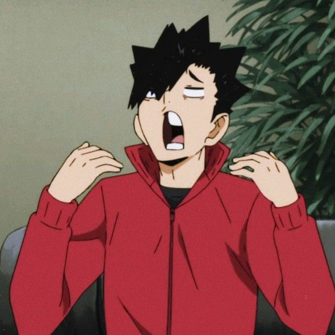
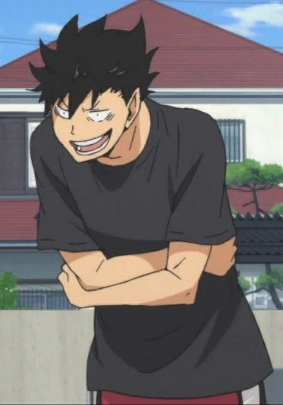
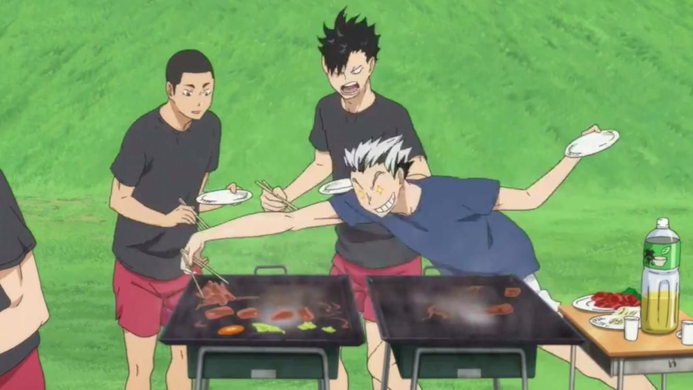

Our next character is the one and only, Tetsuro Kuroo! Kuroo is also a third-year student, but he goes to school at Nekoma High. Kuroo stands at 6'2", is Nekoma's starting middle blocker, and their "Scheming Captain". He's everyone's favorite wacky haired individual. This man is literally the ceiling of Nekoma High School's volleyball team becase he absolutely roofs everyone without remorse.
Other than his height and his ability to quickly analyze and put immense pressure on the opposing teams' setters from his blocking
presence, Kuroo has a special connection with the setter of Nekoma's team, Kenma. Kenma is one of the protagonist's rivals who is
also inspired by Kuroo, their team captain as well as one of his best friends. Lastly, Kuroo's boisterous laugh and ability to poke
fun/provoke anyone he wants helps him become another chaotic character on the Haikyuu tier list. Also just look at him. Don't you
just want to floof his hair?